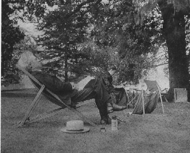

Inside "Dollis Hill"

picture
courtesy of Mark Twain
"The rolling sea of green grass
still
stretches away on every hand, splotched with shadows of spreading
oaks
in whose black coolness flocks of sheep lie peacefully dreaming."
letter to Joseph Twitchell, 6.12.1900,
London, England, as
quoted in Summer in Paradise
back
to exterior